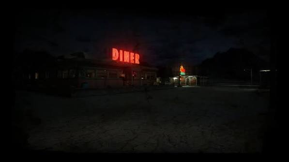

You ignore the sounds coming from the radio and focus on driving,
you pick up speed hoping to find some sign of civilization quickly.
Suddenly what was crying coming from the radio turns into
something more chilling. Sounds of someone screaming for help in
such
an inhuman manner make your skin crawl.Your heart races,
your hair stands on end and you have goosebumps from the sheer
panic
you're experiencing.
Help meeeeeee the voice repeats over and over almost sounding like
multiple voices in unison, filling up the cab as if whatever is
making
these guttural pleas is right next to you screaming in
your ear, but you can’t bring yourself to touch the dial. You have
a gut feeling something
far worse would happen if you did. Up
ahead in the distance you see salvation, a diner lit up with bright
lights, like a beacon guiding you.You
pick up speed and before
you realize you’re in the parking lot, out of your truck and inside
and for a moment you feel relief.

As you look around you notice something off, there’s nobody here….
as you spin yourself around to lock the door, you see it. Standing
at the edge
of the parking lot a creature tall and pale. Its
arms and legs long like a spider, twisted and stretched into place,
long nails twisted and bent outstretched
like claws. Two eyes
glowing at you and a mouth agape revealing rows upon rows of sharp
ragged teeth dripping with blood from what must have been
its
last victim.
You hurry and jump behind the counter to wait until sunrise in the
hopes it will go away. You notice a mirror in the upper corner to
your right and as you
look at it you see the creature in its
reflection, its hands and face pressed up against the door, saliva
dripping from its mouth in hunger. You sit there for
what feels
like hours keeping your eyes intently focused on the reflection
hoping it doesn’t move. You start to nod off, the lack of sleep is
getting to you
and you are struggling to keep your eyes open.
You doze off, when you wake, you notice light coming from outside.
Forgetting you left your headlights on from the hurry you were in
you think it must
finally be sunrise. You slowly stand up from
behind the counter and turn around only to see it’s still dark
outside
and the creature that was once outside the diner is now
ace to face with you across the counter.